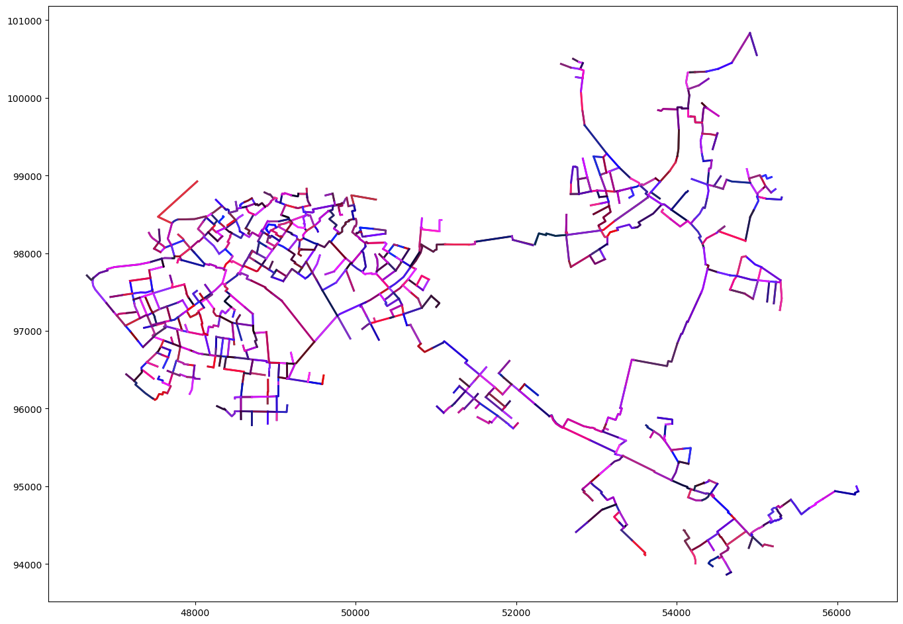
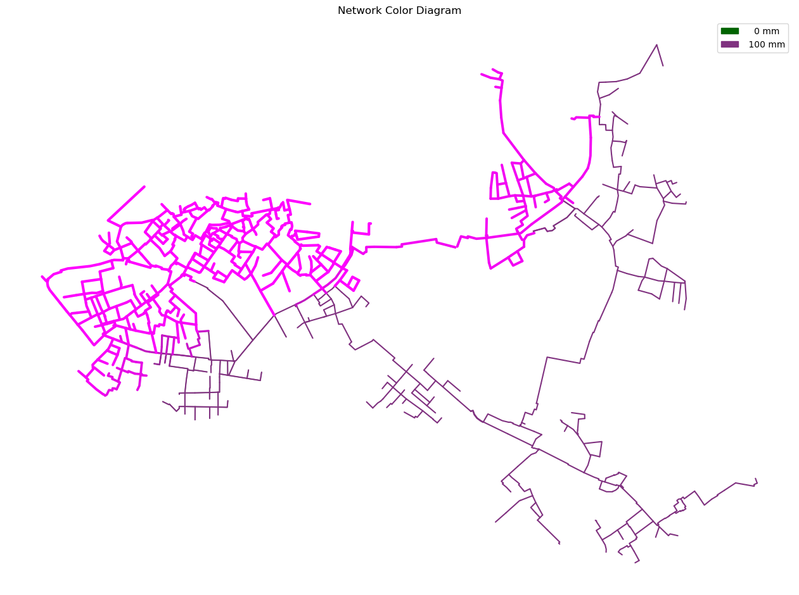

Example7: Work in Progress
Short description of example notebook for the Examples Page Additional information
PT3S Release
[1]:
#pip install PT3S -U --no-deps
Necessary packages for this Example
When running this example for the first time on your machine, please execute the cell below. Afterward, you may need to restart the kernel (using the ‘fast-forward’ button).[2]:
#pip install - q ...
Imports
[3]:
import os
import logging
import pandas as pd
import networkx as nx
import numpy as np
import matplotlib.pyplot as plt
import pandas as pd
import numpy as np
import matplotlib.pyplot as plt
from shapely.geometry import LineString
import geopandas as gpd
#...
try:
from PT3S import dxAndMxHelperFcts
except:
import dxAndMxHelperFcts
try:
from PT3S import Rm
except:
import Rm
try:
from PT3S import ncd
except:
import ncd
#...
[4]:
import importlib
[5]:
#importlib.reload(ncd)
[6]:
#import inspect
#source_code = inspect.getsource(ncd)
#print(source_code)
Logging
[7]:
logger = logging.getLogger()
logFileName= r"Example7.log"
loglevel = logging.DEBUG
logging.basicConfig(filename=logFileName
,filemode='w'
,level=loglevel
,format="%(asctime)s ; %(name)-60s ; %(levelname)-7s ; %(message)s")
fileHandler = logging.FileHandler(logFileName)
logger.addHandler(fileHandler)
consoleHandler = logging.StreamHandler()
consoleHandler.setFormatter(logging.Formatter("%(levelname)-7s ; %(message)s"))
consoleHandler.setLevel(logging.INFO)
logger.addHandler(consoleHandler)
Read Model and Results
[8]:
dbFilename="Example5"
dbFile=os.path.join(os.path.dirname(os.path.abspath(dxAndMxHelperFcts.__file__))
+'/Examples/'
+dbFilename
+'.db3'
)
[9]:
m=dxAndMxHelperFcts.readDxAndMx(dbFile=dbFile,preventPklDump=True)#maxRecords=-1
INFO ; Dx.__init__: dbFile (abspath): c:\users\aUserName\3s\pt3s\Examples\Example5.db3 exists readable ...
INFO ; dxAndMxHelperFcts.readDxAndMx:
+..\Examples\Example5.db3 is newer than
+..\Examples\WDExample5\B1\V0\BZ1\M-1-0-1.1.MX1:
+SIR 3S' dbFile is newer than SIR 3S' mx1File
+in this case the results are maybe dated or (worse) incompatible to the model
INFO ; dxAndMxHelperFcts.readDxAndMx:
+..\Examples\WDExample5\B1\V0\BZ1\M-1-0-1.XML is newer than
+..\Examples\WDExample5\B1\V0\BZ1\M-1-0-1.1.MX1:
+SirCalc's xmlFile is newer than SIR 3S' mx1File
+in this case the results are maybe dated or (worse) incompatible to the model
INFO ; Mx.setResultsToMxsFile: Mxs: ..\Examples\WDExample5\B1\V0\BZ1\M-1-0-1.1.MXS reading ...
INFO ; dxWithMx.__init__: Example5: processing dx and mx ...
Plot with new method
[10]:
dfKNOT=m.V3_KNOT
[11]:
dfROHR=m.gdf_ROHR
[12]:
dfROHR['srcvector_fkKI'] = dfROHR['fkKI'].map(dfKNOT.set_index('tk')['srcvector'])
dfROHR['srcvector_fkKK'] = dfROHR['fkKK'].map(dfKNOT.set_index('tk')['srcvector'])
[13]:
def mix_colors(vector, colors):
vector = np.array(vector, dtype=float) # Ensure the vector is of type float
colors_array = np.array(colors, dtype=float) # Ensure the colors are of type float
mixed_color = np.dot(vector, colors_array)
return mixed_color.astype(int)
[14]:
def convert_to_hex(color_array):
return "#{:02x}{:02x}{:02x}".format(int(color_array[0]), int(color_array[1]), int(color_array[2]))
[15]:
def plot_mixed_colors(df, colors):
df['mixed_color'] = df['srcvector_fkKI'].apply(lambda x: mix_colors(x, colors))
df['mixed_color_hex'] = df['mixed_color'].apply(lambda x: convert_to_hex(np.array(x).clip(0, 255)))
fig, ax = plt.subplots(figsize=Rm.DINA3q)
for idx, row in df.iterrows():
x, y = row['geometry'].xy
color = row['mixed_color_hex']
ax.plot(x, y, color=color, linewidth=2)
plt.show()
[16]:
colors = [np.array([255, 0, 0]), np.array([0, 0, 255])]
[17]:
plot_mixed_colors(dfROHR, colors)

[18]:
dfROHRrand=dfROHR
[19]:
def generate_random_vector(size=3):
return np.random.rand(size).tolist()
random_vectors = pd.Series([generate_random_vector() for _ in range(len(dfROHR))])
dfROHRrand['srcvector_fkKI'] = random_vectors
[20]:
colors=[np.array([255, 0, 0]), np.array([0, 0, 255]), np.array([0, 50, 60])]
[21]:
plot_mixed_colors(dfROHRrand, colors)

[22]:
#black_rows = dfROHR[dfROHR['mixed_color_hex'] == '#000000']
Plot with ncd.py
[23]:
dfKNOT=m.V3_KNOT
[24]:
dfROHR=m.gdf_ROHR
[25]:
dfROHR['srcvector_fkKI'] = dfROHR['fkKI'].map(dfKNOT.set_index('tk')['srcvector'])
dfROHR['srcvector_fkKK'] = dfROHR['fkKK'].map(dfKNOT.set_index('tk')['srcvector'])
[26]:
dfROHR['first_element'] = dfROHR['srcvector_fkKI'].apply(lambda x: x[0] if isinstance(x, list) else None)
dfROHR['second_element'] = dfROHR['srcvector_fkKI'].apply(lambda x: x[1] if isinstance(x, list) else None)
dfROHR['first_element']=dfROHR['first_element'].astype(float)
dfROHR['second_element']=dfROHR['second_element'].astype(float)
dfROHR['difference']=dfROHR['first_element']-dfROHR['second_element']+100
[27]:
fig, ax = plt.subplots(figsize=Rm.DINA3q)
pipes_patches_1 = ncd.pNcd_pipes(ax=ax,
gdf=dfROHR,
attribute='difference',
colors=['darkgreen', 'magenta'],
legend_fmt='{:4.0f} mm',
line_width_factor=3,
legend_values=[0,100],
zorder=2)
all_patches = pipes_patches_1
ax.legend(handles=all_patches, loc='best')
#cx.add_basemap(ax, crs=gdf_ROHR.crs.to_string(), source=cx.providers.CartoDB.PositronNoLabels)
#cx.add_basemap(ax, crs=gdf_ROHR.crs.to_string(), source=cx.providers.CartoDB.PositronOnlyLabels)
plt.title('Network Color Diagram')
plt.savefig('Example7_Output_1.pdf', dpi=300, bbox_inches='tight')
plt.show()

Working
[28]:
dfEBES=m.dx.dataFrames['EBES']
dfEBES_BZ=m.dx.dataFrames['EBES_BZ']
[29]:
# Merge dfEBES and dfEBES_BZ on columns 'pk' and 'fk'
vEBES = pd.merge(dfEBES, dfEBES_BZ, left_on='pk', right_on='fk', suffixes=('', '_BZ')).sort_values(by=['LFDNR', 'AKTIVQS']).reset_index()
# Create lists of NAME and LFDNR from the merged DataFrame
Names = vEBES['NAME'].tolist()
Lfdnrs = vEBES['LFDNR'].tolist()
expColNames = ['qs' + '_' + str(Lfdnr) + '_' + Name for Lfdnr, Name in zip(Lfdnrs, Names)]
# Check for inactive groups with AKTIVQS as float
if not vEBES.shape == vEBES[vEBES['AKTIVQS'] == 101.0].shape:
print("Es gibt inaktive Einspeisergruppen!")
[30]:
qs = ('STAT', 'KNOT~*~*~*~ESQUELLSP', pd.Timestamp('2024-01-09 23:00:00'), pd.Timestamp('2024-01-09 23:00:00'))
[31]:
dfKNOT=m.V3_KNOT
[32]:
dfKNOT['qsStr'] = dfKNOT[qs].str.decode('utf-8')
[33]:
dfKNOT['qsStr'] = dfKNOT['qsStr'].str.rstrip()
[34]:
dfKNOT['srcvector'] = dfKNOT['qsStr'].apply(lambda x: [x.split('\t')[0].strip()] + [elem.strip() for elem in x.split('\t')[1:]])
[35]:
#dfKNOT[['srcvector','qsStr',qs]]
[36]:
# Filter dfKNOT to include only rows where all elements in srcvector are 0
filtered_dfKNOT = dfKNOT[dfKNOT['srcvector'].apply(lambda x: all(element == 0 for element in x))]
[37]:
filtered_dfKNOT
[37]:
| pk | fkDE | rk | tk | NAME | KTYP | XKOR | YKOR | ZKOR | QM_EIN | ... | (STAT, KNOT~*~*~*~PMAX_INST, 2024-01-09 23:00:00, 2024-01-09 23:00:00) | (STAT, KNOT~*~*~*~PMIN_INST, 2024-01-09 23:00:00, 2024-01-09 23:00:00) | (STAT, KNOT~*~*~*~QM, 2024-01-09 23:00:00, 2024-01-09 23:00:00) | (STAT, KNOT~*~*~*~RHO, 2024-01-09 23:00:00, 2024-01-09 23:00:00) | (STAT, KNOT~*~*~*~T, 2024-01-09 23:00:00, 2024-01-09 23:00:00) | (STAT, KNOT~*~*~*~VOLD, 2024-01-09 23:00:00, 2024-01-09 23:00:00) | PH | dPH | srcvector | qsStr |
|---|
0 rows × 150 columns
[38]:
dfKNOT=m.V3_KNOT
[39]:
dfROHR=m.gdf_ROHR
[40]:
dfSRC=dfKNOT[['tk','srcvector']]
dfSRC
[40]:
| tk | srcvector | |
|---|---|---|
| 0 | 4680103632661687203 | [0, 100] |
| 1 | 5540855804579832866 | [100, 0] |
| 2 | 5517245021561014546 | [0, 0] |
| 3 | 5025567272877293202 | [95, 5] |
| 4 | 4660263951317730783 | [100, 0] |
| ... | ... | ... |
| 1557 | 5322477349772075450 | [0, 0] |
| 1558 | 5524372468946832093 | [0, 100] |
| 1559 | 5733371532701512468 | [0, 0] |
| 1560 | 4993345350482955278 | [95, 5] |
| 1561 | 5649673474297384806 | [0, 0] |
1559 rows × 2 columns
[41]:
dfROHRSRC=dfROHR[['fkKI','fkKK']]
dfROHRSRC['fkKI_exists_in_dfSRC'] = dfROHRSRC['fkKI'].isin(dfSRC['tk'])
dfROHRSRC['fkKK_exists_in_dfSRC'] = dfROHRSRC['fkKK'].isin(dfSRC['tk'])
contains_false_fkKI = dfROHRSRC['fkKI_exists_in_dfSRC'].any() == False
contains_false_fkKK = dfROHRSRC['fkKK_exists_in_dfSRC'].any() == False
print(f"Does the column 'exists_in_dfSRC' contain False? {contains_false_fkKI}")
print(f"Does the column 'exists_in_dfSRC' contain False? {contains_false_fkKK}")
dfROHRSRC
Does the column 'exists_in_dfSRC' contain False? False
Does the column 'exists_in_dfSRC' contain False? False
[41]:
| fkKI | fkKK | fkKI_exists_in_dfSRC | fkKK_exists_in_dfSRC | |
|---|---|---|---|---|
| 0 | 4633923442641649780 | 4861612333722514824 | True | True |
| 1 | 5385242986988925951 | 4968957302162750102 | True | True |
| 2 | 4789032251376812728 | 4714338053628675689 | True | True |
| 3 | 4680103632661687203 | 5432609004919372061 | True | True |
| 4 | 4640545062585607086 | 5139756443698698284 | True | True |
| ... | ... | ... | ... | ... |
| 1667 | 5128045753491799259 | 4867102035081211028 | True | True |
| 1668 | 5641694688519704748 | 5564264675869374696 | True | True |
| 1669 | 4856150400548314169 | 4900329574258273507 | True | True |
| 1670 | 4860951051859022136 | 5694310466494827395 | True | True |
| 1671 | 4861612333722514824 | 5115345020267258051 | True | True |
1672 rows × 4 columns
[42]:
merged_df = pd.merge(dfROHRSRC, dfSRC[['tk', 'srcvector']], left_on='fkKI', right_on='tk', how='left')
[43]:
merged_df.drop(columns=['tk'], inplace=True)
[44]:
merged_df.rename(columns={'srcvector': 'srcvector_fkKI'}, inplace=True)
[45]:
merged_df
[45]:
| fkKI | fkKK | fkKI_exists_in_dfSRC | fkKK_exists_in_dfSRC | srcvector_fkKI | |
|---|---|---|---|---|---|
| 0 | 4633923442641649780 | 4861612333722514824 | True | True | [95, 5] |
| 1 | 5385242986988925951 | 4968957302162750102 | True | True | [0, 0] |
| 2 | 4789032251376812728 | 4714338053628675689 | True | True | [0, 0] |
| 3 | 4680103632661687203 | 5432609004919372061 | True | True | [0, 100] |
| 4 | 4640545062585607086 | 5139756443698698284 | True | True | [0, 0] |
| ... | ... | ... | ... | ... | ... |
| 1667 | 5128045753491799259 | 4867102035081211028 | True | True | [98, 2] |
| 1668 | 5641694688519704748 | 5564264675869374696 | True | True | [0, 0] |
| 1669 | 4856150400548314169 | 4900329574258273507 | True | True | [100, 0] |
| 1670 | 4860951051859022136 | 5694310466494827395 | True | True | [100, 0] |
| 1671 | 4861612333722514824 | 5115345020267258051 | True | True | [95, 5] |
1672 rows × 5 columns
[46]:
merged_df = pd.merge(merged_df, dfSRC[['tk', 'srcvector']], left_on='fkKK', right_on='tk', how='left')
[47]:
merged_df.drop(columns=['tk'], inplace=True)
[48]:
merged_df.rename(columns={'srcvector': 'srcvector_fkKK'}, inplace=True)
[49]:
merged_df
[49]:
| fkKI | fkKK | fkKI_exists_in_dfSRC | fkKK_exists_in_dfSRC | srcvector_fkKI | srcvector_fkKK | |
|---|---|---|---|---|---|---|
| 0 | 4633923442641649780 | 4861612333722514824 | True | True | [95, 5] | [95, 5] |
| 1 | 5385242986988925951 | 4968957302162750102 | True | True | [0, 0] | [0, 0] |
| 2 | 4789032251376812728 | 4714338053628675689 | True | True | [0, 0] | [0, 0] |
| 3 | 4680103632661687203 | 5432609004919372061 | True | True | [0, 100] | [0, 100] |
| 4 | 4640545062585607086 | 5139756443698698284 | True | True | [0, 0] | [0, 0] |
| ... | ... | ... | ... | ... | ... | ... |
| 1667 | 5128045753491799259 | 4867102035081211028 | True | True | [98, 2] | [98, 2] |
| 1668 | 5641694688519704748 | 5564264675869374696 | True | True | [0, 0] | [0, 0] |
| 1669 | 4856150400548314169 | 4900329574258273507 | True | True | [100, 0] | [100, 0] |
| 1670 | 4860951051859022136 | 5694310466494827395 | True | True | [100, 0] | [100, 0] |
| 1671 | 4861612333722514824 | 5115345020267258051 | True | True | [95, 5] | [95, 5] |
1672 rows × 6 columns
[50]:
differing_rows = merged_df[merged_df['srcvector_fkKI'] != merged_df['srcvector_fkKK']]
[51]:
differing_rows
[51]:
| fkKI | fkKK | fkKI_exists_in_dfSRC | fkKK_exists_in_dfSRC | srcvector_fkKI | srcvector_fkKK | |
|---|---|---|---|---|---|---|
| 57 | 5398837071191369601 | 5267246667282084348 | True | True | [90, 10] | [75, 25] |
| 78 | 5302161036120205748 | 5696286129939720928 | True | True | [87, 13] | [58, 42] |
| 100 | 5465377790656857485 | 5487494706380924171 | True | True | [0, 100] | [45, 55] |
| 191 | 5301624050296190402 | 5144770862341515670 | True | True | [59, 41] | [58, 42] |
| 199 | 4916661390301568572 | 5671366723829060255 | True | True | [99, 1] | [100, 0] |
| 246 | 4804557823529386905 | 4837967340067928800 | True | True | [99, 1] | [100, 0] |
| 257 | 4825698248521372919 | 5419941292222858592 | True | True | [97, 3] | [98, 2] |
| 258 | 5053047766437794171 | 4912644895321712213 | True | True | [11, 89] | [34, 66] |
| 285 | 5295662925240869173 | 4732525992409597169 | True | True | [100, 0] | [97, 3] |
| 310 | 5126251062680666376 | 5496105756871471300 | True | True | [0, 100] | [15, 85] |
| 366 | 4933906092092944101 | 5670935278778854984 | True | True | [96, 4] | [90, 10] |
| 393 | 5487494706380924171 | 5191455435867208827 | True | True | [45, 55] | [54, 46] |
| 401 | 5258861183398215736 | 5716582368539258909 | True | True | [97, 3] | [90, 10] |
| 519 | 5031166415418048028 | 4804557823529386905 | True | True | [98, 2] | [99, 1] |
| 526 | 4804557823529386905 | 5509520755042418424 | True | True | [99, 1] | [98, 2] |
| 542 | 4916661390301568572 | 4837967340067928800 | True | True | [99, 1] | [100, 0] |
| 608 | 4997520779010326791 | 5490305337592760652 | True | True | [0, 100] | [3, 97] |
| 638 | 5696286129939720928 | 5448548681680644289 | True | True | [58, 42] | [40, 60] |
| 668 | 5432248042677302815 | 5294235852321810388 | True | True | [98, 2] | [90, 10] |
| 672 | 5489003886579673747 | 5174544282834247145 | True | True | [100, 0] | [95, 5] |
| 690 | 5694310466494827395 | 5508604436670812750 | True | True | [100, 0] | [98, 2] |
| 700 | 5187164701350669518 | 4916661390301568572 | True | True | [98, 2] | [99, 1] |
| 718 | 4941187833999631229 | 5135971168065784188 | True | True | [0, 100] | [23, 77] |
| 738 | 4955373489706324087 | 5611031766206964315 | True | True | [97, 3] | [79, 21] |
| 780 | 5487494706380924171 | 4789123648157868879 | True | True | [45, 55] | [95, 5] |
| 828 | 5138474092733471076 | 5144770862341515670 | True | True | [77, 23] | [58, 42] |
| 849 | 5365188720060776260 | 5409814237786290482 | True | True | [98, 2] | [97, 3] |
| 869 | 5615048211634621618 | 5525125717847968738 | True | True | [100, 0] | [90, 10] |
| 874 | 5232133941526053133 | 5360759856116745230 | True | True | [58, 42] | [34, 66] |
| 895 | 4732525992409597169 | 4793608931282787178 | True | True | [97, 3] | [34, 66] |
| 901 | 5419941292222858592 | 4629640814433374506 | True | True | [98, 2] | [100, 0] |
| 968 | 5525125717847968738 | 5263180678376141268 | True | True | [90, 10] | [0, 100] |
| 1051 | 5611031766206964315 | 5240057736165248871 | True | True | [79, 21] | [34, 66] |
| 1052 | 5191455435867208827 | 5662012287420212425 | True | True | [54, 46] | [95, 5] |
| 1087 | 4961317154241148904 | 5258861183398215736 | True | True | [98, 2] | [97, 3] |
| 1131 | 4646239326998743312 | 5174544282834247145 | True | True | [90, 10] | [95, 5] |
| 1152 | 4877009140800142170 | 5490305337592760652 | True | True | [15, 85] | [3, 97] |
| 1156 | 5733523741574333290 | 4912644895321712213 | True | True | [100, 0] | [34, 66] |
| 1163 | 4804557823529386905 | 5449283705007764487 | True | True | [99, 1] | [98, 2] |
| 1171 | 5577448408546857738 | 5567047119891889984 | True | True | [98, 2] | [76, 24] |
| 1176 | 5107104632237549014 | 5365188720060776260 | True | True | [97, 3] | [98, 2] |
| 1219 | 5040685249222528828 | 5267246667282084348 | True | True | [0, 100] | [75, 25] |
| 1225 | 4738377477444899325 | 5448548681680644289 | True | True | [34, 66] | [40, 60] |
| 1243 | 5138474092733471076 | 5302161036120205748 | True | True | [77, 23] | [87, 13] |
| 1246 | 5567047119891889984 | 4715091783184927746 | True | True | [76, 24] | [59, 41] |
| 1331 | 5074594183838392416 | 4933906092092944101 | True | True | [97, 3] | [96, 4] |
| 1349 | 4815864388724319759 | 5496105756871471300 | True | True | [100, 0] | [15, 85] |
| 1411 | 5294235852321810388 | 5188001838088698751 | True | True | [90, 10] | [76, 24] |
| 1416 | 4679168270864626273 | 5301624050296190402 | True | True | [77, 23] | [59, 41] |
| 1453 | 5302161036120205748 | 5535419120893782618 | True | True | [87, 13] | [97, 3] |
| 1462 | 5551411141468416056 | 5053047766437794171 | True | True | [75, 25] | [11, 89] |
| 1538 | 4672146773283724363 | 5232133941526053133 | True | True | [79, 21] | [58, 42] |
| 1570 | 5129237009807641729 | 5135971168065784188 | True | True | [95, 5] | [23, 77] |
| 1637 | 5053047766437794171 | 5395195692820400032 | True | True | [11, 89] | [0, 100] |
[52]:
merged_df['first_element'] = merged_df['srcvector_fkKI'].apply(lambda x: x[0] if isinstance(x, list) else None)
[53]:
merged_df['second_element'] = merged_df['srcvector_fkKI'].apply(lambda x: x[1] if isinstance(x, list) else None)
[54]:
merged_df
[54]:
| fkKI | fkKK | fkKI_exists_in_dfSRC | fkKK_exists_in_dfSRC | srcvector_fkKI | srcvector_fkKK | first_element | second_element | |
|---|---|---|---|---|---|---|---|---|
| 0 | 4633923442641649780 | 4861612333722514824 | True | True | [95, 5] | [95, 5] | 95 | 5 |
| 1 | 5385242986988925951 | 4968957302162750102 | True | True | [0, 0] | [0, 0] | 0 | 0 |
| 2 | 4789032251376812728 | 4714338053628675689 | True | True | [0, 0] | [0, 0] | 0 | 0 |
| 3 | 4680103632661687203 | 5432609004919372061 | True | True | [0, 100] | [0, 100] | 0 | 100 |
| 4 | 4640545062585607086 | 5139756443698698284 | True | True | [0, 0] | [0, 0] | 0 | 0 |
| ... | ... | ... | ... | ... | ... | ... | ... | ... |
| 1667 | 5128045753491799259 | 4867102035081211028 | True | True | [98, 2] | [98, 2] | 98 | 2 |
| 1668 | 5641694688519704748 | 5564264675869374696 | True | True | [0, 0] | [0, 0] | 0 | 0 |
| 1669 | 4856150400548314169 | 4900329574258273507 | True | True | [100, 0] | [100, 0] | 100 | 0 |
| 1670 | 4860951051859022136 | 5694310466494827395 | True | True | [100, 0] | [100, 0] | 100 | 0 |
| 1671 | 4861612333722514824 | 5115345020267258051 | True | True | [95, 5] | [95, 5] | 95 | 5 |
1672 rows × 8 columns
[55]:
dfZERO = merged_df[(merged_df['first_element'].astype(int) == 0) & (merged_df['second_element'].astype(int) == 0)]
[56]:
dfNONZERO = merged_df[(merged_df['first_element'].astype(int) != 0) & (merged_df['second_element'].astype(int) != 0)]
[57]:
dfZERO
[57]:
| fkKI | fkKK | fkKI_exists_in_dfSRC | fkKK_exists_in_dfSRC | srcvector_fkKI | srcvector_fkKK | first_element | second_element | |
|---|---|---|---|---|---|---|---|---|
| 1 | 5385242986988925951 | 4968957302162750102 | True | True | [0, 0] | [0, 0] | 0 | 0 |
| 2 | 4789032251376812728 | 4714338053628675689 | True | True | [0, 0] | [0, 0] | 0 | 0 |
| 4 | 4640545062585607086 | 5139756443698698284 | True | True | [0, 0] | [0, 0] | 0 | 0 |
| 5 | 5493516499270992191 | 5662971635761773976 | True | True | [0, 0] | [0, 0] | 0 | 0 |
| 7 | 5580659932269400552 | 5233361229874136148 | True | True | [0, 0] | [0, 0] | 0 | 0 |
| ... | ... | ... | ... | ... | ... | ... | ... | ... |
| 1658 | 5147254168279984407 | 5416299466389719783 | True | True | [0, 0] | [0, 0] | 0 | 0 |
| 1662 | 4892601735259440959 | 4915609493631133953 | True | True | [0, 0] | [0, 0] | 0 | 0 |
| 1663 | 4980116957351545066 | 5739158652428222909 | True | True | [0, 0] | [0, 0] | 0 | 0 |
| 1666 | 5725671001528138570 | 5625617188419534365 | True | True | [0, 0] | [0, 0] | 0 | 0 |
| 1668 | 5641694688519704748 | 5564264675869374696 | True | True | [0, 0] | [0, 0] | 0 | 0 |
836 rows × 8 columns
[58]:
dfNONZERO
[58]:
| fkKI | fkKK | fkKI_exists_in_dfSRC | fkKK_exists_in_dfSRC | srcvector_fkKI | srcvector_fkKK | first_element | second_element | |
|---|---|---|---|---|---|---|---|---|
| 0 | 4633923442641649780 | 4861612333722514824 | True | True | [95, 5] | [95, 5] | 95 | 5 |
| 6 | 5074594183838392416 | 4828427080100360189 | True | True | [97, 3] | [97, 3] | 97 | 3 |
| 21 | 5537792572962299168 | 4631921264858376170 | True | True | [98, 2] | [98, 2] | 98 | 2 |
| 27 | 5494856247482742405 | 5581382032624837035 | True | True | [34, 66] | [34, 66] | 34 | 66 |
| 38 | 5063000535941710264 | 5665362208938470093 | True | True | [34, 66] | [34, 66] | 34 | 66 |
| ... | ... | ... | ... | ... | ... | ... | ... | ... |
| 1648 | 5044539320873010557 | 4951130038878843519 | True | True | [23, 77] | [23, 77] | 23 | 77 |
| 1651 | 5694875246151878747 | 5187164701350669518 | True | True | [98, 2] | [98, 2] | 98 | 2 |
| 1665 | 5031396644404617342 | 5225476564759504529 | True | True | [95, 5] | [95, 5] | 95 | 5 |
| 1667 | 5128045753491799259 | 4867102035081211028 | True | True | [98, 2] | [98, 2] | 98 | 2 |
| 1671 | 4861612333722514824 | 5115345020267258051 | True | True | [95, 5] | [95, 5] | 95 | 5 |
324 rows × 8 columns
[59]:
# Check for equals between fkKI and fkKK in dfZERO and fkKI and fkKK in dfNONZERO
crossreference_equals = dfZERO[dfZERO['fkKK'].isin(dfNONZERO['fkKI'])]
print("Crossreferenced equals between dfZERO and dfNONZERO:")
print(crossreference_equals)
Crossreferenced equals between dfZERO and dfNONZERO:
Empty DataFrame
Columns: [fkKI, fkKK, fkKI_exists_in_dfSRC, fkKK_exists_in_dfSRC, srcvector_fkKI, srcvector_fkKK, first_element, second_element]
Index: []
[60]:
dfROHR = dfROHR.merge(dfKNOT[['tk', 'srcvector']], left_on='fkKI', right_on='tk', how='left')
dfROHR.rename(columns={'srcvector': 'srcvector_fkKI'}, inplace=True)
#dfROHR.drop(columns=['tk'], inplace=True)
# Merge dfROHR with dfKNOT on fkKK and tk
dfROHR = dfROHR.merge(dfKNOT[['tk', 'srcvector']], left_on='fkKK', right_on='tk', how='left')
dfROHR.rename(columns={'srcvector': 'srcvector_fkKK'}, inplace=True)
#dfROHR.drop(columns=['tk'], inplace=True)
[61]:
dfROHR
[61]:
| pk | fkDE | rk | tk_x | fkKI | fkKK | fkDTRO_ROWD | fkLTGR | fkSTRASSE | L | ... | srcvector_fkKK | mixed_color | mixed_color_hex | first_element | second_element | difference | tk_y | srcvector_fkKI | tk | srcvector_fkKK | |
|---|---|---|---|---|---|---|---|---|---|---|---|---|---|---|---|---|---|---|---|---|---|
| 0 | 5109195716093378957 | 5613149064237404433 | 5109195716093378957 | 5449345369546692719 | 4633923442641649780 | 4861612333722514824 | 5097406239665719560 | 5326766509284399853 | -1 | 160.000000 | ... | [95, 5] | [156, 43, 252] | #9c2bfc | 95.0 | 5.0 | 190.0 | 4633923442641649780 | [95, 5] | 4861612333722514824 | [95, 5] |
| 1 | 5454715077635807193 | 5613149064237404433 | 5454715077635807193 | 5735818605379287475 | 5385242986988925951 | 4968957302162750102 | 5172173297092247082 | 5326766509284399853 | -1 | 125.000000 | ... | [0, 0] | [236, 1, 103] | #ec0167 | 0.0 | 0.0 | 100.0 | 5385242986988925951 | [0, 0] | 4968957302162750102 | [0, 0] |
| 2 | 5547011855269037345 | 5613149064237404433 | 5547011855269037345 | 4974222656556376383 | 4789032251376812728 | 4714338053628675689 | 5358056248241253720 | 5199453223326228720 | -1 | 111.796997 | ... | [0, 0] | [197, 17, 57] | #c51139 | 0.0 | 0.0 | 100.0 | 4789032251376812728 | [0, 0] | 4714338053628675689 | [0, 0] |
| 3 | 5678273483201896811 | 5613149064237404433 | 5678273483201896811 | 5460759352148475007 | 4680103632661687203 | 5432609004919372061 | 5419539925221172320 | 5199453223326228720 | -1 | 75.000000 | ... | [0, 100] | [134, 8, 188] | #8608bc | 0.0 | 100.0 | 0.0 | 4680103632661687203 | [0, 100] | 5432609004919372061 | [0, 100] |
| 4 | 5316257320622561613 | 5613149064237404433 | 5316257320622561613 | 5705661604719704313 | 4640545062585607086 | 5139756443698698284 | 5419539925221172320 | 5199453223326228720 | -1 | 75.000000 | ... | [0, 0] | [235, 20, 166] | #eb14a6 | 0.0 | 0.0 | 100.0 | 4640545062585607086 | [0, 0] | 5139756443698698284 | [0, 0] |
| ... | ... | ... | ... | ... | ... | ... | ... | ... | ... | ... | ... | ... | ... | ... | ... | ... | ... | ... | ... | ... | ... |
| 1667 | 5221069093731638843 | 5613149064237404433 | 5221069093731638843 | 5414146693336048598 | 5128045753491799259 | 4867102035081211028 | 5538673226758468241 | 5326766509284399853 | -1 | 90.000000 | ... | [98, 2] | [249, 2, 5] | #f90205 | 98.0 | 2.0 | 196.0 | 5128045753491799259 | [98, 2] | 4867102035081211028 | [98, 2] |
| 1668 | 5701302053526812802 | 5613149064237404433 | 5701302053526812802 | 4734037309077581553 | 5641694688519704748 | 5564264675869374696 | 5538673226758468241 | 5326766509284399853 | -1 | 60.000000 | ... | [0, 0] | [145, 19, 213] | #9113d5 | 0.0 | 0.0 | 100.0 | 5641694688519704748 | [0, 0] | 5564264675869374696 | [0, 0] |
| 1669 | 5300846026047076006 | 5613149064237404433 | 5300846026047076006 | 4785931077566306273 | 4856150400548314169 | 4900329574258273507 | 5097406239665719560 | 5326766509284399853 | -1 | 65.000000 | ... | [100, 0] | [32, 0, 205] | #2000cd | 100.0 | 0.0 | 200.0 | 4856150400548314169 | [100, 0] | 4900329574258273507 | [100, 0] |
| 1670 | 5676453563661878160 | 5613149064237404433 | 5676453563661878160 | 4654356254567213187 | 4860951051859022136 | 5694310466494827395 | 4615667097597887019 | 5199453223326228720 | -1 | 145.000000 | ... | [100, 0] | [89, 12, 128] | #590c80 | 100.0 | 0.0 | 200.0 | 4860951051859022136 | [100, 0] | 5694310466494827395 | [100, 0] |
| 1671 | 5565147425335570868 | 5613149064237404433 | 5565147425335570868 | 5560874807547367026 | 4861612333722514824 | 5115345020267258051 | 5097406239665719560 | 5326766509284399853 | -1 | 180.000000 | ... | [95, 5] | [153, 2, 189] | #9902bd | 95.0 | 5.0 | 190.0 | 4861612333722514824 | [95, 5] | 5115345020267258051 | [95, 5] |
1672 rows × 138 columns
[ ]:
[ ]:
[ ]:
[ ]:
[ ]: